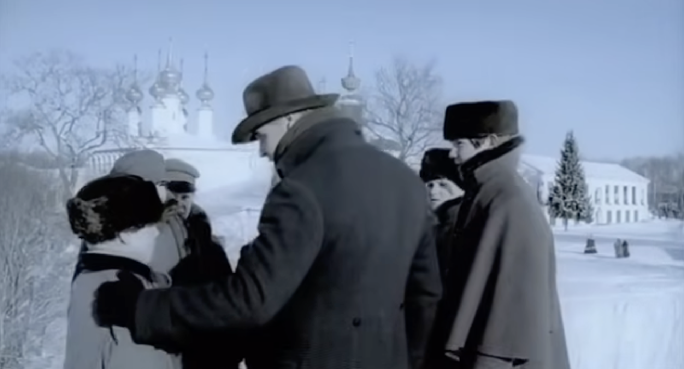

Epilogue
- Chapter 1. Plans for Mitia's escape
Alesha connects the characters again. This is God.
Katerina and Ivan's escape plan is fixing the world that God fucked up.
Ivan provides 10000 to pay for the fixing (cf. Raskolnikov's plans to be charitable).
Katerina Ivanovna's confession to Alesha
KI: I am guilty because I slandered him in order to hurt him (759).
She is still the infernal woman.
She speaks with wounded pride and "venom" toward Alesha (759).
Alesha convinces Katerina to visit Mitya. A. fulfills his major narrative/ideological function.
- Chapter 2. For a Moment the Lie Became Truth.
satire: Trifon searches for money that the prosecution claimed Mitya hid in his restaurant in the crawl space (the lower class version of the Underground man) (762)
Mitia's insane plan to escape to America in order to return to Russia (765)
"Katya suddenly appeared in the doorway" (765)
"they prattled to each other, and their talk was frantic, almost senseless ... at that moment everything was truth" (766)
Katia asks for forgiveness from Grushenka (767) Grusha says: 'It was her proud lips speaking, not her heart' (767).
ab. Katerina: "her eyes flashed with savage wickedness" (767).
- Chapter 3. Ilyushechka's Funeral. Speech at the Stone
God is connectedness, feel of relatedness. This is Alesha's role in the novel.
the opposite is Rakitin: science and domination (what Rakitin teaches to Kolya)
Alesha's speech, short and simple, not logical and manipulative like the lawyers at the trial: "He felt honor and his father's bitter offense made him rise up" (774). Cf. Mitia and Ivan letting Sm. murder his father.
neglected children theme: Alesha--there is nothing higher than a memory from the parental home (774).
founding a community at the stone and creating a sacred memory (note this is something about which you cannot laugh).
Nietsche btw defines sacred as something about which you cannot laugh: for example a sacred, cherished memory
"Memory eternal!" the boys again joined in (776)

Fig.1. Alesha talks to boys at Ilyusha's funeral.
The Brothers Karamazov. tv series dir. Iurii Moroz, Russia 2009
BTW we are right before Xmas timewise in the novel :).